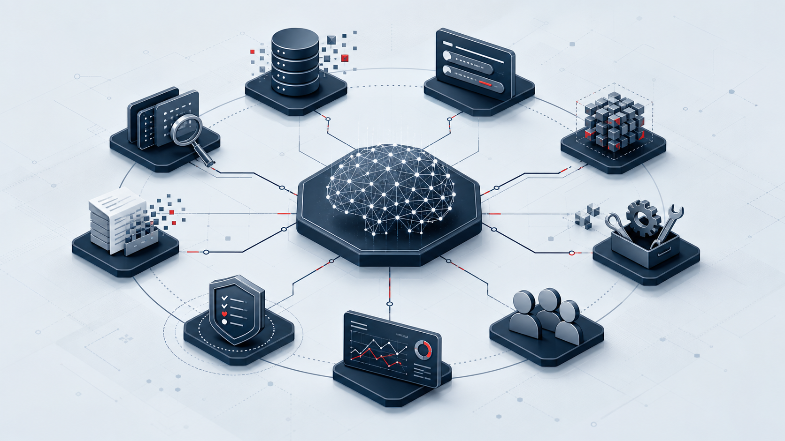

La seguridad aparece cuando cada pieza tiene límites claros, pruebas y trazabilidad.
IA segura desde la base
Seguridad IA sin humo
Aprende a proteger datos, prompts, modelos, RAG, agentes y herramientas.

Funciones NIST AI RMF: gobernar, mapear, medir y gestionar.
Familias AISVS para verificar sistemas IA de forma técnica.
Secretos dentro del prompt. Las claves viven fuera del contexto del modelo.
Mapa de seguridad IA
Relaciona activos, amenazas y controles sin necesitar servidor ni base de datos.
Riesgos que conviene nombrar
El primer paso defensivo es distinguir qué puede fallar y dónde se materializa.
Laboratorio de exposición
Configura un caso de uso y observa cómo cambian el riesgo y los controles prioritarios.
Controles por ciclo de vida
La seguridad se reparte entre diseño, datos, modelo, integración, despliegue y operación.
Marco UE y España
Conecta riesgos y controles con las obligaciones que pueden activarse por datos, rol, sector o nivel de riesgo.
Checklist mínima
Una guía de revisión para prototipos, asistentes internos y primeras integraciones con LLM.
Quiz rápido
Comprueba si reconoces el control adecuado para cada riesgo.
Referencias oficiales
Fuentes primarias para profundizar en seguridad, gobernanza, verificación y cumplimiento de sistemas IA.
Glosario esencial
Términos básicos para leer documentación técnica sin perder el hilo.
Prompt injection
Entrada maliciosa que intenta cambiar las instrucciones efectivas del modelo o del sistema que lo rodea.
RAG
Arquitectura que añade contexto externo al prompt desde documentos, bases vectoriales u otras fuentes.
Agente
Sistema IA que puede planificar pasos, usar herramientas y actuar sobre aplicaciones o datos.
Evaluación
Prueba repetible que mide comportamiento, seguridad, calidad o cumplimiento antes y después de cambios.